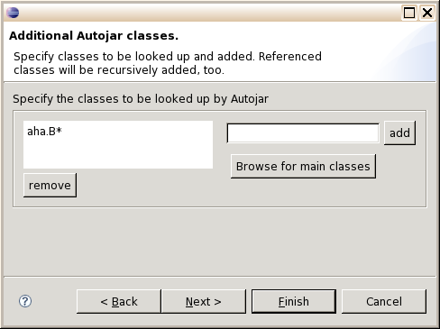
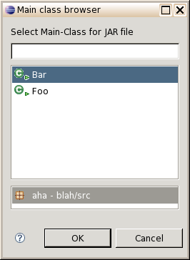

| Klassenangabe
In diesem Fenster können Sie interaktiv Namen von Klassen festlegen, die
gesucht und in das Ausgabearchiv übernommen werden sollen. Der Bytecode
dieser Klassen wird rekursiv nach weiteren referenzierten Klassen
durchsucht und diese werden ebenfalls übernommen, sofern sie nicht schon
enthalten sind.

Geben Sie neue aufzunehmende in das rechte Eingabefeld ein und übernehmen
Sie sie mit "add" in die Liste. Listeneinträge können durch Markieren
und Klicken auf "remove" wieder entfernt werden.
Klassennamen können in ihrer letzten Komponente die Musterzeichen * und
? enthalten. Es werden dann alle Klassen gesucht und übernommen, die diesem
Muster entsprechen. Mit der Angabe a.b.* würden z.B.
alle Klassen des Packages a.b übernommen.
Häufig genügt es, hier die Hauptklasse (bz.w eine der Hauptklassen)
des Projekts anzugeben. Falls es davon mehrere gibt, können Sie einfach
eine davon aus einer Liste auswählen, die nach einem Klick auf "Browse for main classes"
erscheint:
 |
 SourceForge Projektseite
SourceForge Projektseite
 Optionen
Optionen